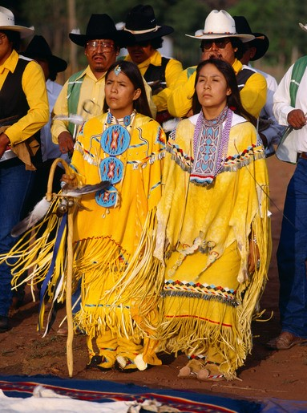

The Apache are a group of culturally related Native American tribes in the Southwestern United States.
Historically, the Apache homelands have consisted of high mountains, sheltered and watered valleys, deep canyons, deserts, and the southern Great Plains, including areas in what is now Eastern Arizona,
Northern Mexico and New Mexico, West Texas, and Southern Colorado. These areas are collectively known as Apacheria.
The Apache tribes fought the invading Spanish and Mexican peoples for centuries. The first Apache raids on Sonora appear to have taken place during the late 17th century. In 19th-century confrontations during the American-Indian wars, the U.S. Army found the Apache to be fierce warriors and skillful strategists.
Apache Tribe: The Sunrise Ceremony
Type of Holiday: Religious (Apache)
Date of Observation: Four days in July
Where Celebrated: Arizona and New Mexico
The Apache Girls' Sunrise Ceremony is part of the Native American religious tradition. The history of this and other Native American cultures dates back thousands of years into prehistoric times.
The historical development of religious belief systems among Native Americans is not well known. Most of the information available was gathered by Europeans who arrived on the continent beginning in the sixteenth century. The data they recorded was fragmentary and oftentimes of questionable accuracy because the Europeans did not understand the native cultures they were trying to describe.
In July, ceremonies are held at both the Arizona and New Mexico reservations to celebrate the coming-of-age of young Apache girls.
Although in the 1800s the U.S. government forbade the Apaches to congregate, in 1911 they were granted permission to get together on July 4th to celebrate the nation's birthday. They chose this date for one of their most important cultural rituals as an insult to their conquerors.
For the four days of the so-called "getting her ready" ceremony, the mythical power of Changing Woman is believed to enter these girls' bodies, giving them the power to heal those around them. Their faces are painted with white clay, and each girl is blessed with sacred CATTAIL POLLEN . They wear a piece of ABALONE SHELL above their foreheads and act out the role of their mythical female ancestor as they prepare for their lives as adult women.
The size of these ceremonies is one of their most distinctive traits: dozens of people may attend, and they must be fed for the four days that the ceremony lasts. In addition, singers, musicians, and dancers are hired, so the cost of the celebration is significant. Some families find it beyond their means, and this is one reason why the ritual is less common than it used to be. However, in many cases, the extended family will help underwrite the expense. Financial assistance may also come from the woman who serves as the initiate's SPONSOR . This figure is usually a mature friend of the family who aids the young woman throughout the ceremony and is somewhat similar to a godmother.
On the first day, a SYMBOLIC TIPI is constructed to house the ritual activities that will take place. Soon after, a medicine man blesses the CEREMONIAL DRESS that will be worn by the girl, a CANE , and various other sacred items used in the ceremony. On the morning of the second day, the SUNRISE DANCE is performed by the girl and her sponsor. It is during this dance that the girl is believed to take on the powers of Changing Woman, which she then uses in BLESSING THE SICK . The initiate also receives blessings, which take place when adult guests at the ceremony sprinkle CATTAIL POLLEN on her head.
Throughout the four days of the ceremony, the initiate must observe certain guidelines that are related to the sacred quality she is believed to possess. She can only drink through a straw, because if she touches water directly, it's believed that she will bring rain. If she scratches her skin with her fingernails, she will be scarred, so she is given a special scratching stick to prevent this from happening. She also must maintain a serious demeanor because if she laughs a great deal during the ceremony, she is said to become prematurely wrinkled.
Beginning on the second evening, four or more CROWN DANCERS perform a dramatic set of dances, representing the Gaan mountain spirits, who are thought to create good fortune for the girl and those attending the ceremony. The CROWN DANCERS and the girl dance on subsequent days as well, and the girl also completes a RUNNING RITUAL . When the ceremony concludes after four days, the initiate's supernatural powers come to an end, but she is then considered a woman and is eligible for marriage.

SYMBOLS AND CUSTOMS
The piece of abalone shell tied above the forehead of each girl participating in this ceremony represents the shell in which Changing Woman, according to Apache legend, survived a great flood to become the First Apache.
When the initiate takes on the spirit of Changing Woman during the sunrise dance, she is believed to have the power to help those who are suffering from illness or otherwise need assistance. During the ceremony, they come before the girl, and she blesses them in hopes of giving them some of her qualities of longevity and strength. The girl will usually lay her hands on the person and then turn them to each of the four directions. In this way, the girl's coming of age becomes an event that also benefits the wider community.
Representing long life, the cane is made of wood and usually has bells, feathers, and ribbons attached to it. The initiate holds it during her dances, and it is also used in the running ritual.
The Apache consider the pollen from the cattail plant to be a sacred substance that represents the life-giving quality of the earth. To invoke its power for the young woman, guests at the ceremony sprinkle the pollen on her head.
The girl undergoing the ceremony dons a bright yellow dress on the first day and wears it for the remainder of the ritual. Her sponsor sometimes wears one in a similar style. Traditionally, these were made of buckskin but now are often fashioned from cloth.
In this part of the ceremony, the girl's cane is stuck into the ground in specific places, and she runs to it and circles it, returning to her starting point. This symbolizes the different stages of life she will pass through. The girl then makes four additional runs to the four cardinal directions. Small children sometimes accompany the girl during the running.
As she enters adulthood, the girl has the assistance of an older female who helps her make the transition. In addition to molding the initiate and participating in the sunrise dance, the sponsor often contributes money to finance the ceremony.
The central action on the part of the girl is the sunrise dance, which takes place early on the second day of the ceremony. Accompanied by the sponsor, the initiate faces east toward the rising sun and dances a specific program of songs, usually a total of thirty-two, with music provided by singers and drummers. The songs relate the story of Changing Woman, and in the course of this performance, the girl is believed to take on the holy powers of that figure.
The traditional house of the Apache people is the tipi. It is invoked in the ceremony, but rather than creating an actual tipi with walls, a ceremonial open-air structure is made, lashing together four spruce poles in a tipi shape. It provides a ceremonial enclosure, but the open design allows the guests to view the ritual.